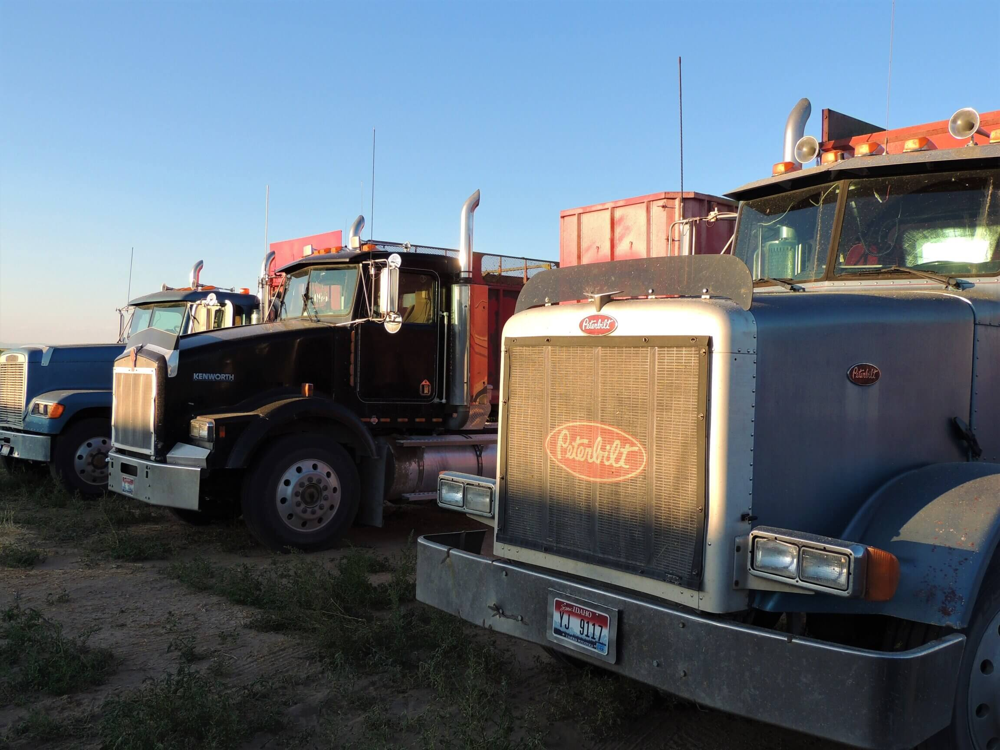
Behind the Blades
Before the First Cut
It takes planning and preparation to chop siliage. We start in June, three to four weeks before the event. During this time, most of the work is completed by Dave, Steve, and Kayrene; however there are things that other workers help with too.
Prep includes:
- check or change oil
- check water in radiator
- grease all serts on equiptment
- check air in all tires
Team Duties
| Dave and Steve | Kayrene and Helpers | Michelle |
|---|---|---|
| Arrange prep work | Check physical condition of trucks and trailers for repairs or maintence | Clean the camp trailer |
| Talk to Farmers | Clean cab, windows, and mirrors of all trucks | Run parts if needed |
| Pack tractor prep, repair, and maintence | Help with repairs and maintence | Shopping for supplies to stock the camp trailer |
| Chopper prep, repair, and maintence | Run the floor chains | Plan meals for crew |
| Complete repairs on equiptment | Oil drive chains that run the floor chains | Shop for meals |
| Load scales on trailer | Help load scales on trailer | Help transport equiptment to Hamar |
| Adjust floor chains on trucks if needed | Air up tires | |
| Dave-Sides on peterbuilt | Help put sides on peterbuilt | |
| Steve-prep and maintence on own truck | Fuel trucks and take them to Hamar |
Grease truck
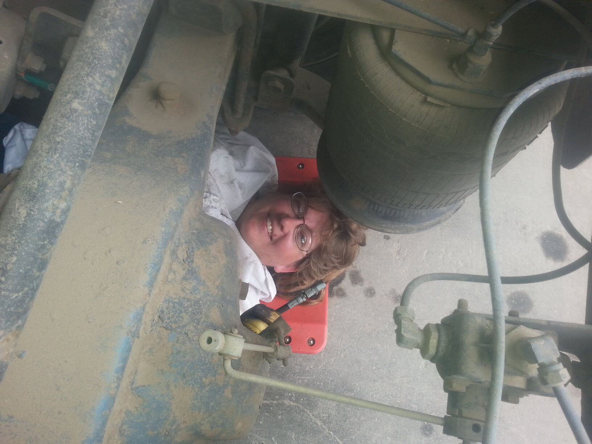Done Greasing
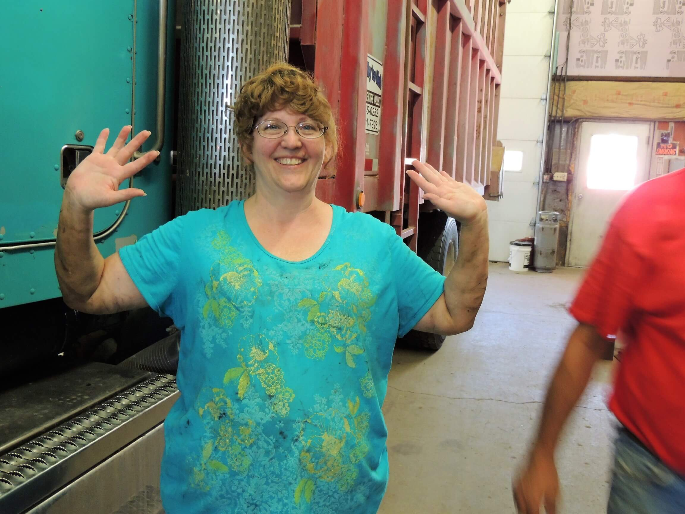Grease clutch
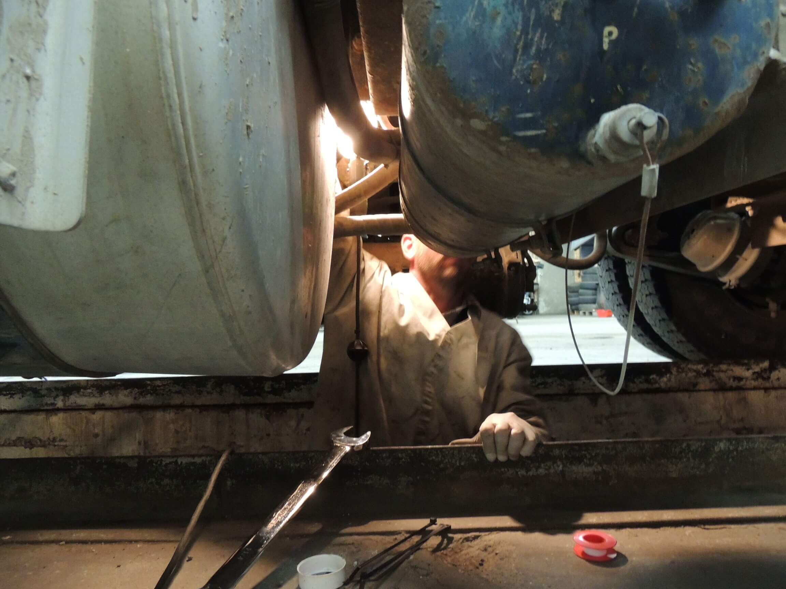Oil Drive chains
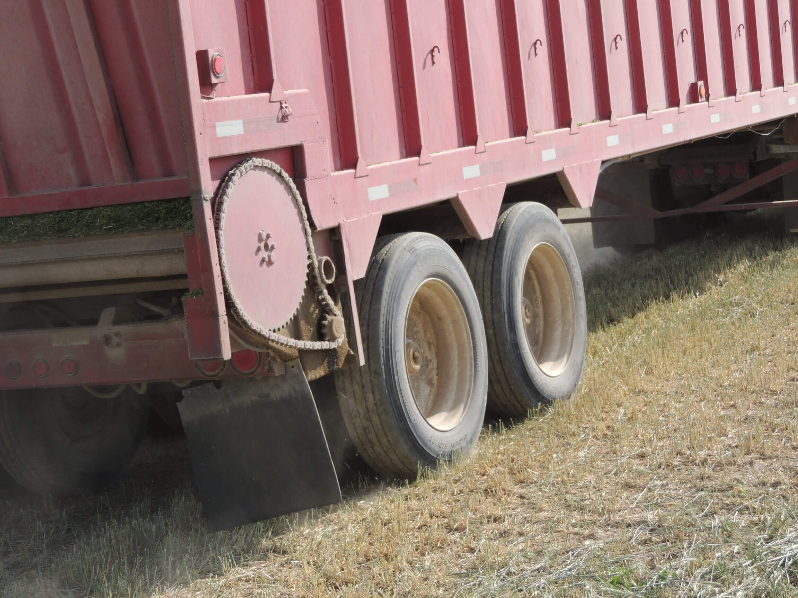Header maintence
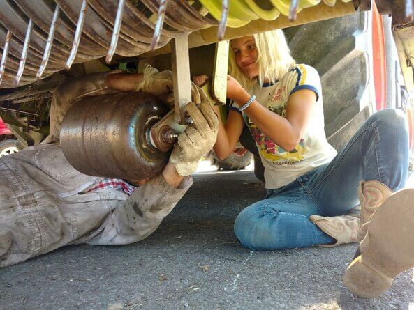Chopper maintence
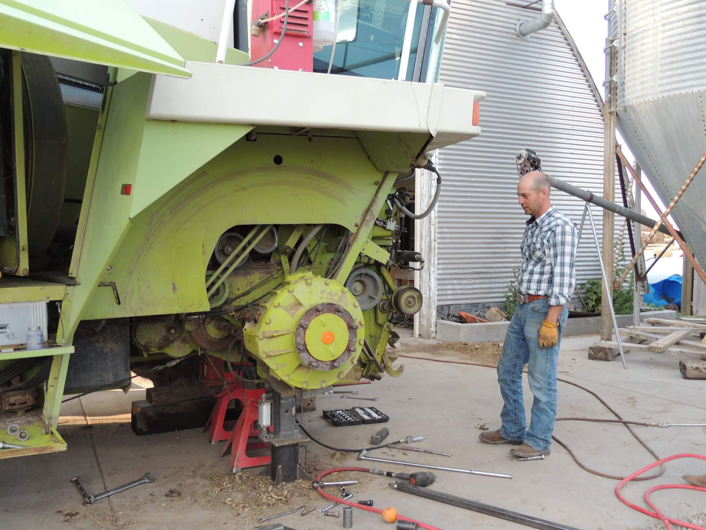Chopper part
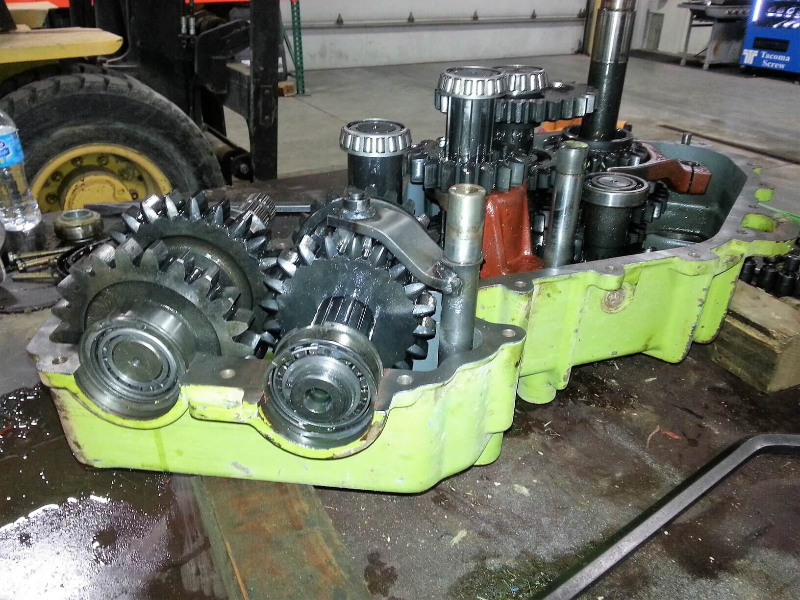Replace knives
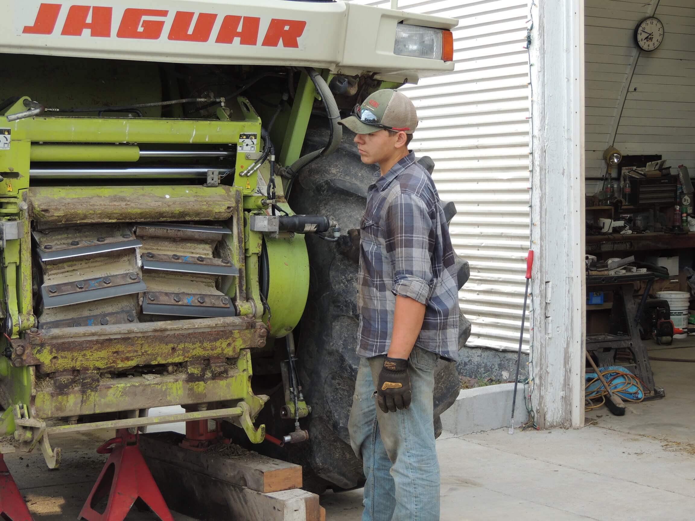Replace spout
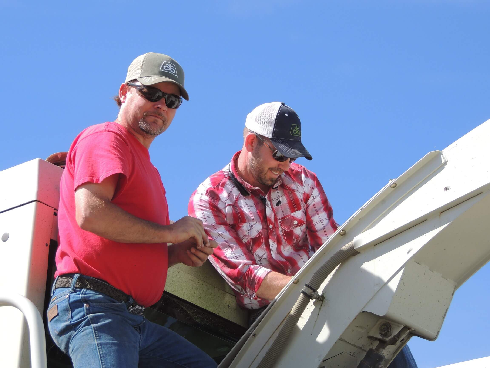Tractor maintence
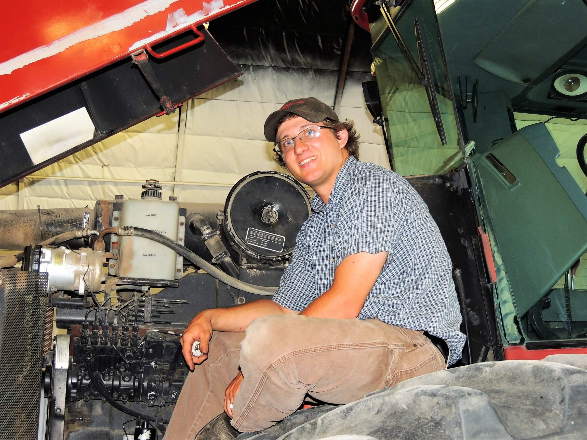Frame for pack tractor
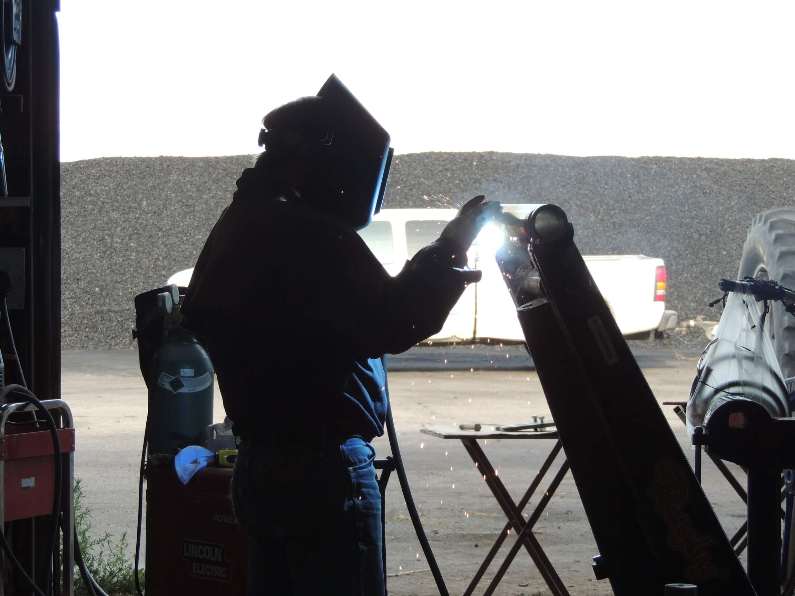Paint crew
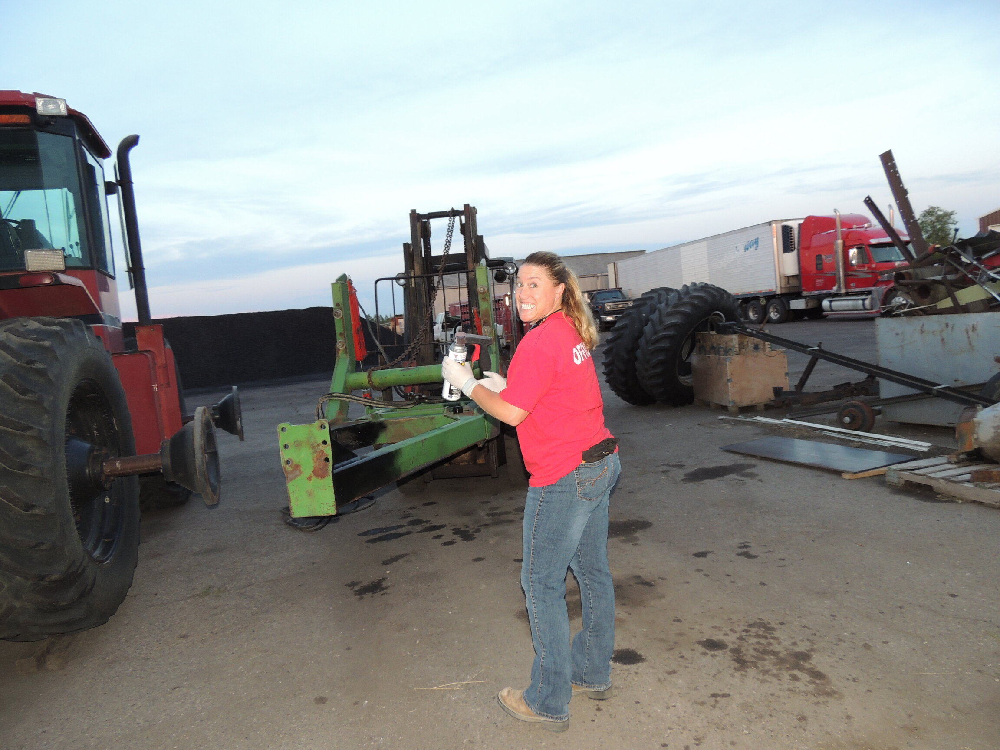Ready to Roll
A day or two before chopping, Kayrene and a helper or Michelle shuttle trucks and scales to Hamar. Then Dave and Steve move the chopper and pack tractor up while Michelle and Kayrene take the camp trailer and last truck up.